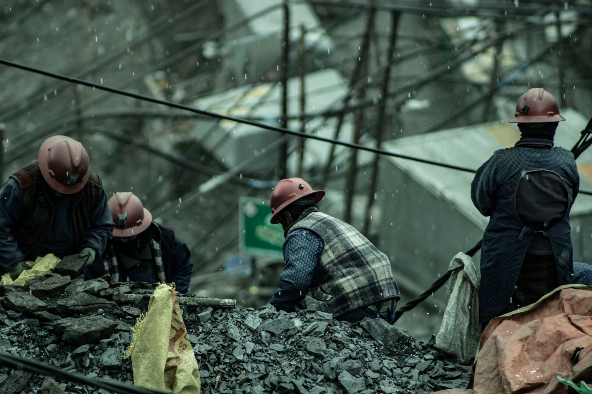

도시광산서 재탄생…희소금속 자원순환 주목

폐 스마트폰, 노트북, 전기차 배터리 등 사용이 끝난 전자제품 속에는 금, 은, 팔라듐, 코발트, 인듐 등 수십 종의 희소금속이 담겨 있다. 이를 체계적으로 회수하는 '도시광산(Urban Mining)' 산업이 자원 안보와 탄소중립이라는 두 가지 과제를 동시에 해결할 수 있는 방안으로 주목받고 있다.
도시광산의 경제적 가치는 상상 이상이다. 스마트폰 1톤에서는 금 약 300g, 은 약 3kg, 팔라듐 약 130g이 추출 가능한 것으로 알려져 있다. 이는 금광 원석 1톤에서 채굴 가능한 금의 양(평균 5~10g)과 비교해 수십 배 높은 수준이다. 전 세계적으로 연간 발생하는 전자폐기물은 약 5,000만 톤으로, 그 잠재 가치는 약 620억 달러(약 85조 원)에 달한다.
국내 도시광산 산업의 대표 주자로는 성일하이텍, 영풍, LS-Nikko동제련 등이 꼽힌다. 성일하이텍은 리튬이온배터리 재활용을 통한 코발트·리튬·니켈 회수에 특화되어 있으며, 최근 유럽 배터리 재활용 업체와의 합작 설립을 추진 중인 것으로 알려졌다. 영풍은 귀금속 정련 분야에서 국내 최대 처리 능력을 보유하고 있다.
글로벌 시장에서는 유럽의 우미코어(Umicore), 미국의 Redwood Materials, 일본의 DOWA홀딩스 등이 도시광산 분야의 선두 기업으로 꼽힌다. 특히 Redwood Materials는 테슬라 창업자 JB 스트라우벨이 설립한 기업으로, 전기차 배터리에서 98% 이상의 핵심 금속을 회수하는 기술을 보유했다고 주장하며 대규모 투자를 유치했다.
희소금속 회수 기술도 빠르게 고도화되고 있다. 기존의 건식 제련(고온 용융) 방식에서 습식 제련(화학 용액 처리) 방식으로 전환되면서 회수율이 크게 향상됐다. 최근에는 AI 기반 선별 시스템과 직접 리사이클링(direct recycling) 기술이 접목되면서 에너지 소비를 줄이면서도 순도 높은 금속을 회수할 수 있게 됐다.
도시광산 전문가인 한 국내 연구원은 "채굴 광산의 희소금속 생산이 지정학적 리스크와 환경 규제로 갈수록 불안정해지는 상황에서, 도시광산은 안정적이고 지속 가능한 공급원으로서의 역할이 더욱 커질 것"이라고 강조했다.
정책 측면에서 유럽연합(EU)은 '배터리 규정(Battery Regulation)'을 통해 2031년부터 배터리 내 코발트, 리튬, 니켈의 일정 비율을 재활용 원료로 충당하도록 의무화했다. 코발트의 경우 2031년 이후 신규 배터리에 재활용 코발트 16% 이상 사용을 규정하고 있어, 도시광산 수요는 법적으로도 보장받는 구조가 만들어지고 있다.
국내에서도 환경부와 산업통상자원부가 전기차 배터리 재활용 의무화 제도 도입을 본격 논의 중이다. 2027년부터 단계적으로 폐배터리 회수율 및 금속 회수 기준을 의무화하는 내용이 검토되고 있으며, 이는 도시광산 사업자들에게 안정적인 원료 수급 기반을 제공할 것으로 기대된다.
도시광산 산업의 성장성은 수치로도 확인된다. 글로벌 배터리 재활용 시장 규모는 2025년 약 90억 달러에서 2030년 약 380억 달러로 연평균 33% 이상 성장할 것으로 예측된다. 전기차 보급 확대와 에너지저장장치(ESS) 시장 성장이 폐배터리 물량 증가로 이어지며 원료 공급 기반이 두터워질 전망이다.
국내 투자자들에게도 도시광산 관련 기업들이 주목받고 있다. 성일하이텍, 새빗켐, 에코프로 계열의 재활용 자회사 등이 관심 대상으로 꼽힌다. 다만 원자재인 폐배터리 수거 경쟁이 심화되면서 원료 확보 비용이 상승할 수 있다는 점은 리스크 요인으로 지적된다.
전문가들은 도시광산이 '제2의 광산'을 넘어 '순환경제의 핵심 인프라'로 자리매김할 것이라고 전망한다. 자원 빈국인 한국이 수입 의존도를 줄이면서 희소금속 가공·재활용 기술 강국으로 도약할 수 있는 가장 현실적인 경로가 도시광산 산업의 육성이라는 점에서, 정책적 지원의 필요성이 더욱 높아지고 있다.